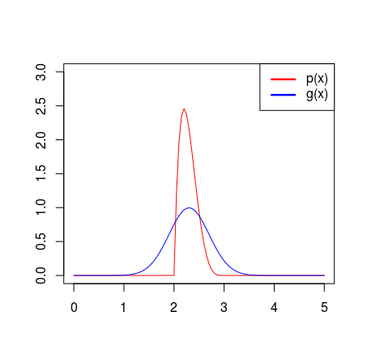

Sequential Monte Carlo in Approximate Bayesian Computation
Overview
- Motivation
- Approximate Bayesian Computation
- SMC in ABC
- Focus on algorithm developed by Del Moral et. al. (2012)
- Examples
Bayesian Inference
- $p(\boldsymbol{\theta}|\boldsymbol{y})\propto p(\boldsymbol{y}|\boldsymbol{\theta})p(\boldsymbol{\theta})$
- $\boldsymbol{\theta}$ are parameters of some model
- $\boldsymbol{y}$ is observed data
- $p(\boldsymbol{\theta}|\boldsymbol{y})\propto \color{red} p(\boldsymbol{y}|\boldsymbol{\theta})\color{black}p(\boldsymbol{\theta})$
- Likelihood
- $p(\boldsymbol{\theta}|\boldsymbol{y})\propto \color{red} p(\boldsymbol{y}|\boldsymbol{\theta})\color{blue}p(\boldsymbol{\theta})$
- Likelihood: Model of data
- Prior: Prior knowledge
Posterior
- Potentially difficult to evaluate
- Many methods exist for approximating a distribution
Approximating the posterior
- MCMC methods
- Popular for sampling from arbitrary distribution
- Importance sampling
- Need to evaluate likelihood
Approximate Bayesian Computation
- Approximation to distribution without evaluating likelihood
- Also known as Likelihood-free methods
- First used in population genetics
- Can be used where model is some stochastic process
- Need to be able to generate (many) samples from likelihood
Illustration of core idea
- Introduce an auxillary variable $\boldsymbol{x}$ $p(\boldsymbol{\theta},\boldsymbol{x}|\boldsymbol{y})\propto p(\boldsymbol{y}|\boldsymbol{x},\boldsymbol{\theta})p(\boldsymbol{x}|\boldsymbol{\theta})p(\boldsymbol{\theta})$
- Assuming $p(\boldsymbol{y}|\boldsymbol{x},\boldsymbol{\theta})$ has point mass $\boldsymbol{x}=\boldsymbol{y}$
Posterior can be retrieved by integrating out $\boldsymbol{x}$
$\begin{align*}p(\boldsymbol{\theta}|\boldsymbol{y}) & \propto\int_{Y}p(\boldsymbol{y}|\boldsymbol{x},\boldsymbol{\theta})p(\boldsymbol{x}|\boldsymbol{\theta})d\boldsymbol{x}p(\boldsymbol{\theta})\\ & =p(\boldsymbol{y}|\boldsymbol{\theta})p(\boldsymbol{\theta})\end{align*}$
Relaxation of requirements
- Generate samples from the likelihood that lie close to the observed data
- $\boldsymbol{x}\approx\boldsymbol{y}$
- Let $p(\boldsymbol{y}|\boldsymbol{x},\boldsymbol{\theta})$ be some kernel density function centered on $\boldsymbol{y}$
- $d(\boldsymbol{x},\boldsymbol{y}) <\epsilon$
- Another relaxation of requirements
- Use statistics instead of data itself
$d(S(\boldsymbol{x}),S(\boldsymbol{y})) <\epsilon$ - $S(\boldsymbol{x})\approx S(\boldsymbol{y})$ more likely than $\boldsymbol{x}\approx\boldsymbol{y}$
- Would like the statistics to be sufficient for the parameters being estimated
$p(S(\boldsymbol{y})|\boldsymbol{\theta})p(\boldsymbol{\theta}) = p(\boldsymbol{y}|\boldsymbol{\theta})p(\boldsymbol{\theta})$
Problems
- Finding statistics
- Ad-hoc
- Not focus here
- Getting a good approximation to posterior
$\epsilon \to 0$ - Computational resources
- Early example from Marjoram et al. (2003)
SMC in ABC
- Focus here is on an algorithm developed by Del Moral et. al. (2012)
- Algorithm uses what is called an SMC sampler developed by Del Moral et. al. (2006)
SMC sampler
- Detour into Sequential Monte Carlo
Importance sampling
- Target distribution, $p(\boldsymbol{x})$
- Proposal distribution, $g(\boldsymbol{x})$
 - Generate weighted sample: $w(\boldsymbol{x})=\frac{p(\boldsymbol{x})}{g(\boldsymbol{x})}$
Sequential Importance Resampling
- Sample $\boldsymbol{x}_{1},...,\boldsymbol{x}_{n}$ using probability distribution for $g(\boldsymbol{x})$
- Calculate the weights, $w(\boldsymbol{x}_{i})$
- Resample from the set $\boldsymbol{x}_{1},...,\boldsymbol{x}_{n}$ $m$ times with probabilities for drawing $\boldsymbol{x}_{i}$ being proportional to the weight $w(\boldsymbol{x}_{i})$.
Normalised weights
- If the target distribution is only known up to a constant: $\mathrm{c}p(\boldsymbol{x})$
- $w(\boldsymbol{x}_{i})=\frac{p(\boldsymbol{x}_{i})/g(\boldsymbol{x}_{i})}{\sum_{j=1}^{n}p(\boldsymbol{x}_{j})/g(\boldsymbol{x}_{j})}$
- The constant cancels
Sequential Monte Carlo
- Idea is to split problem of computing $w(\boldsymbol{x})=\frac{p(\boldsymbol{x})}{g(\boldsymbol{x})}$ into substeps
- $w(\boldsymbol{x})=\frac{p(x_{1})p(x_{2}|x_{1})p(x_{3}|x_{1},x_{2})...p(x_{k}|x_{1},...,x_{k-1})}{g(x_{1})g(x_{2}|x_{1})g(x_{3}|x_{1},x_{2})...g(x_{k}|x_{1},...,x_{k-1})}$
- Define $\boldsymbol{x}_{t}=(x_{1},...,x_{t})$
$w(\boldsymbol{x}_{t})=w(\boldsymbol{x}_{t-1})\frac{p(x_{t}|\boldsymbol{x}_{t-1})}{g(x_{t}|\boldsymbol{x}_{t-1})}$ - High-dimensional problems
- Can make use of $p(x_{t}|\boldsymbol{x}_{t-1})$ when setting up the proposal distribution $g(x_{t}|\boldsymbol{x}_{t-1})$
A further approximation
- Difficult to get $p(x_{k}|\boldsymbol{x}_{k-1})$
- Introduce a sequence of approximations to marginal: $\hat{p}(\boldsymbol{x}_{k})$
- Final step in approximation: $\hat{p}(\boldsymbol{x}_{k})=p(\boldsymbol{x}_{k})$
- Weight update becomes: $$\begin{align*} w(\boldsymbol{x}_{t}) & =w(\boldsymbol{x}_{t-1})\frac{\hat{p}(\boldsymbol{x}_{t})}{\hat{p}(\boldsymbol{x}_{t-1})g(x_{t}|\boldsymbol{x}_{t-1})}\\ & =w(\boldsymbol{x}_{t-1})u_{t}(\boldsymbol{x}_{t-1}) \end{align*}$$
- Approximations will cancel and final weight is: $w(\boldsymbol{x}_{k})=\frac{p(\boldsymbol{x}_{k})}{g(\boldsymbol{x}_{k})}$
Weight degeneracy
- Weights will spread out
- Small number of particles can dominate
Possible remedy
- Introduce resampling steps
- Resample with probability proportional to the weights
- Triggered by a measure called Effective Sample Size (ESS)
- How many samples are weighted ones compared to ones coming from the true distribution
ESS
- Definition used here:$$\frac{1}{\sum_{i=1}^{n}w(\boldsymbol{x}_{i})^{2}}$$
- Valid when using normalised weights
- Liu (2001):$$\mathrm{ESS}=\frac{n}{1+\mathrm{var}_{g}(w(\boldsymbol{X}))}$$
SMC sampler
- Del Moral et. al. (2006)
- The main idea is that the underlying probability space is the same through the weight updates
- Achieved by using what is called backward kernels
- $w(\boldsymbol{x}_{i})=\frac{p_{i}(\boldsymbol{x}_{i})\Pi_{t=2}^{i}L(\boldsymbol{x}_{t},\boldsymbol{x}_{t-1})}{g_{1}(\boldsymbol{x}_{1})\Pi_{t=1}^{i-1}K(\boldsymbol{x}_{t},\boldsymbol{x}_{t+1})}$
Optimal backward kernel
- $L_{i-1}(\boldsymbol{x}_{i},\boldsymbol{x}_{i-1})=\frac{g_{i-1}(\boldsymbol{x}_{i-1})K_{i}(\boldsymbol{x}_{i-1},\boldsymbol{x}_{i})}{g_{i}(\boldsymbol{x}_{i})}$
- Optimal in sense of minimum variance of unormalised weights
- Difficulty in computing marginals: $g(\boldsymbol{x}_{i})$
- Instead approximate optimal backward kernel with an MCMC kernel with invariant distribution $p_{i}(\boldsymbol{z}_{i})$
Adaptive SMC method in ABC
- Del Moral et. al. (2012)
- A particle: $\{\boldsymbol{\theta},\{\boldsymbol{x}\}_{1:m}\}$
- $p_{\epsilon}(\boldsymbol{\theta},\{\boldsymbol{x}\}_{1:m}|\boldsymbol{y})$
- The marginal for $\boldsymbol{\theta}$ is the same for any $m$
- By using backward MCMC kernel $\begin{align*} w_{i}(\boldsymbol{z}_{i}) & =w_{i-1}(\boldsymbol{z}_{i-1})\frac{p_{i}(\boldsymbol{z}_{i-1})}{p_{i-1}(\boldsymbol{z}_{i-1})}\\ & \propto w_{i-1}(\boldsymbol{z}_{i-1})\frac{\sum_{j=1}^{m}I_{\epsilon_{i},\boldsymbol{y}}(\boldsymbol{x}_{i-1}^{(j)})}{\sum_{j=1}^{m}I_{\epsilon_{i-1},\boldsymbol{y}}(\boldsymbol{x}_{i-1}^{(j)})} \end{align*}$
- Now need to specify kernel for propagating the particles
Weight update
- Metropolis-Hastings ratio:
$\begin{multline} \min\left(1,\frac{p_{\epsilon}(\boldsymbol{\theta}_{i+1},\{\boldsymbol{x}_{i+1}\}_{1:m}|\boldsymbol{y})q_{i}(\boldsymbol{\theta}_{i+1},\boldsymbol{\theta}_{i})\prod_{j=1}^{m}p(\boldsymbol{x}_{i}^{(j)}|\boldsymbol{\theta}_{i})}{p_{\epsilon}(\boldsymbol{\theta}_{i},\{\boldsymbol{x}_{i}\}_{1:m}|\boldsymbol{y})q_{i}(\boldsymbol{\theta}_{i},\boldsymbol{\theta}_{i+1})\prod_{j=1}^{m}p(\boldsymbol{x}_{i+1}^{(j)}|\boldsymbol{\theta}_{i+1})}\right)=\\ \min\left(1,\frac{\sum_{j=1}^{m}\mathrm{I}_{\epsilon,\boldsymbol{y}}(\boldsymbol{x}_{i+1}^{(j)})q_{i}(\boldsymbol{\theta}_{i+1},\boldsymbol{\theta}_{i})p(\boldsymbol{\theta}_{i+1})}{\sum_{j=1}^{m}\mathrm{I}_{\epsilon,\boldsymbol{y}}(\boldsymbol{x}_{i}^{(j)})q_{i}(\boldsymbol{\theta}_{i},\boldsymbol{\theta}_{i+1})p(\boldsymbol{\theta}_{i})}\right)\label{eq:mh_ratio_without_likelihood} \end{multline}$
Algorithm


Resampling schedule
$\mathrm{ESS}(w(\boldsymbol{x}_{i}))=\alpha\mathrm{ESS}(w(\boldsymbol{x}_{i-1}))$

Examples
Simple mixture
- $p(\theta|x)\sim(\mathrm{N}(\theta,1)+\mathrm{N}(\theta,\frac{1}{100}))\mathrm{I}_{[-10,10]}(\theta)$
- $d(x,y)=|x-y|$
- Single observation at $y=0$
No replicates
5 replicates
20 replicates
MA(2) process
- Example used in Marin et. al. (2012)
- $z_{t}=a_{t}-\theta_{1}a_{t-1}-\theta_{2}a_{t-2}$
- The task is to provide estimates for $\boldsymbol{\theta}$
- Prior is chosen to be uniform on region that makes the process invertible
- There is a closed expression for the likelihood
Setups
- Trying two different statistics
- In all cases a time series of length 100 is generated, and this is used as the observation
Autocovariance distance
- Using measure of autocovariance as statistic
- $d=\frac{1}{n}\left(\sum_{i=2}^{n}\left(x_{i}x_{i-1}\right)-\sum_{i=2}^{n}\left(y_{i}y_{i-1}\right)\right)^{2}\\ +\frac{1}{n}\left(\sum_{i=2}^{n}\left(x_{i}x_{i-2}\right)-\sum_{i=2}^{n}\left(y_{i}y_{i-2}\right)\right)^{2}$
Autocovariance distance
Raw distance function
- $d=\sum_{i=1}^{n}\left(x_{i}-y_{i}\right)^{2}$
Raw distance function
- Same settings as in previous example
What happens when it gets stuck?
Note: Data from a different example


Raw distance function
- $\alpha=0.99$
Raw distance function
- $\alpha=0.9$, 5 replicates
- Fixed
- Method we present here requires many samples from approximation to likelihood